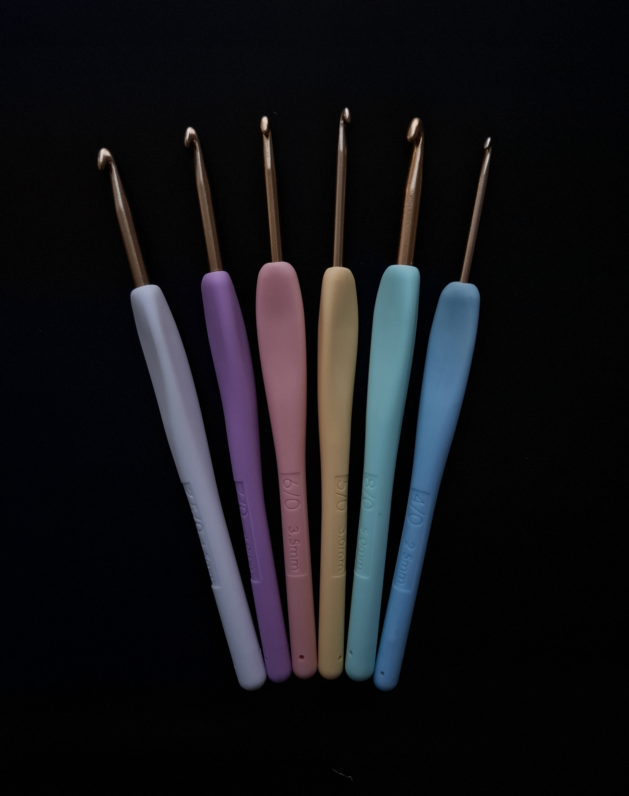

Aquí podrás encontrar variedad de productos hechos con mucho amor
Hecho con amor
punto mio es una marca dedicada a la creación de productos artesanales tejidos a mano, donde cada pieza está elaborada con dedicación, creatividad y mucho cariño.
Encuentra lo que tenemos para ti